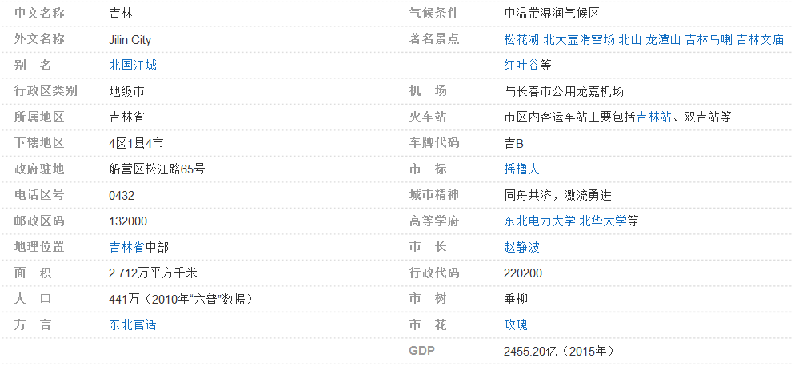
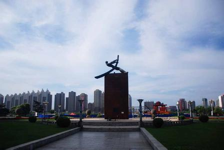
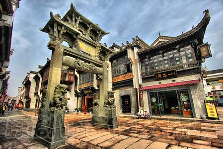
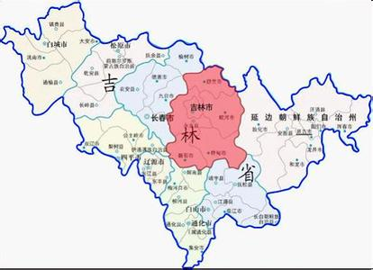
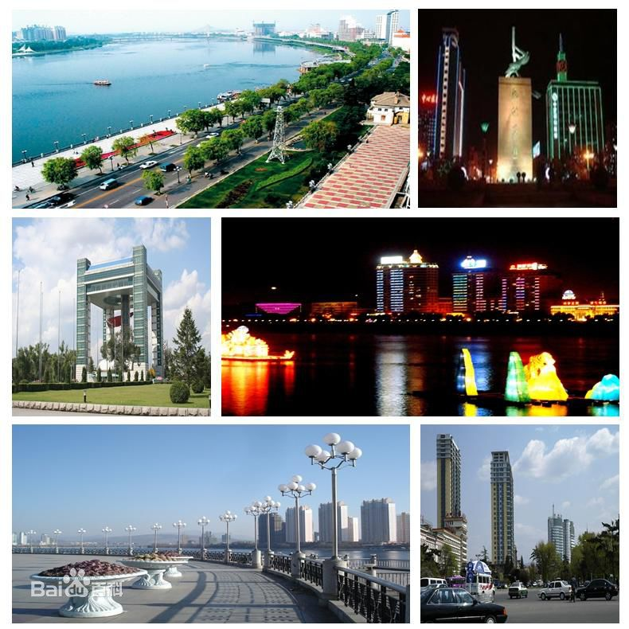

美丽吉林
____之历史与文化
吉林市是吉林省下辖地级市、吉林省第二大城市，吉林省重要的中心城市和新型
工业基地，具有
中国北方特色的旅游城市，国家历史文化名城 。吉林市位于吉林
省中部偏东，距省会长春124千米，是“雾凇之都”。
吉林省因吉林市而得名，吉林市是中国唯一省市同名的城市，满语名为“吉林乌
拉”，意为“沿江的城池”，因康熙皇帝东巡吉林
城所作《松花江放船歌》有“连樯接舰
屯江城”之句，故吉林市又被称为“江城”、“北国江城”。 吉林市荣登福布斯中国大陆最
佳商业城市排行榜。
吉林市是满族的发祥地之一，境内居住汉、满、蒙、回、朝鲜等35个民族。


早在远古时期，就有人类在吉林省这块土地上繁衍生息。距今约5～1万年前出现的“寿山仙人洞”、“榆树人”、“安图人”、“青山头人”，是吉林省古人类文明形成的重要标志。
舜、禹至夏商周时代，吉林省境内的古代民族就开始与中原王朝建立了具有隶属性质的贡纳关系并逐渐成为中华
清代初期吉林版图（1683年后）
清代初期吉林版图（1683年后）
民族的重要组成部分。这一时期形成了肃慎、濊貊、东胡、山戎、夫余等各民族地方政权。
汉武帝元封三年（前108），灭卫满朝鲜设玄菟郡，管辖吉林省东南部。东部和南部的长白、图们、敦化、和龙、汪清、龙井、珲春、延吉等市县，先后属苍海郡、临屯郡、乐浪郡；通化、集安、梅河口、靖宇、白山等市县则先后属真番郡、玄菟郡。这是吉林地区进入中原王朝行政建置之始。[6]
前37~668年间，高句丽活跃于吉林省，曾定都于集安丸都山和国内城，与东汉、曹魏、隋朝等中央政权时战时和，鼎盛时期其势力范围包括吉林东南部、辽河以东和朝鲜半岛北部。
唐高宗总章元年（668），唐朝和新罗联合灭高句丽，设置安东都护府，[7] 西北部地区属唐室韦都护府。[6] 圣历元年（698），粟末靺鞨首领大祚荣，在敦化东牟山立“震国”，
吉林省政府成立时，省属市县已由1945年11月10日中共吉林省工委成立时辖属的3市23县，调整为辖长春、吉林2市和长春、榆树、德惠、九台、通阳、永吉、蛟河、舒兰、磐石、桦甸、敦化、延吉、和龙、汪清、珲春、安图等16县，至1946年5月下旬部分市、县被国民党军占领之前，均已成立了市、县政府，辖区人口650余万人。[10]
1945年11月25日，中共永吉地委征得驻吉苏军同意，成立吉林市民主政府，至1946年5月28日随军撤出，吉林市被国民党军队占领。
1945年8月，日本战败投降，国民党成立“吉林地方治安维持会”。后把东北划成9省，吉林省领长春、吉林2市和永吉、榆树等18县1旗。
1946年5月，共产党军队从吉林市撤出，国民党在此成立了吉林省政府。同时中共发起了四次“四平战役”。
1946年11月，在吉林东南部发起了“三下江南，四保临江”，成功粉碎了国民党军队的进攻。
1948年3月9日，中共占领吉林市。3月10日，中共吉林省政府迁至吉林市。
1948年10月19日，驻长春国民党守军起义投诚，长春解放。自此吉林省全境解放。[10]
1949年4月21日，长春市政府由东北行政委员会直属改由吉林省政府直属，东北划分为6省。
新中国建立初期，吉林省辖2个市、2个专区、1旗、22个县和1个工业特区。
1954年，东北行政区划调整，将原黑龙江省的7个县划归吉林省，与原属吉林的乾安县共同组建白城专区；将原辽东省的1市9县划归吉林省，设立通化专区；将原辽东省的辽源市、西安县、东丰县和原辽西省的四平市、双辽县、梨树县划归吉林省管辖。东北6省改为4省，吉林省与黑龙江省、辽宁省以两省新划归吉林省的市、县界线为省界，与朝鲜、苏联国界仍旧。
1954年9月27日，长春直辖市改为省辖，省会迁往长春。[10]
1969年，内蒙古自治区的哲里木盟和呼伦贝尔盟的1县1旗划归吉林省，1979年又划归内蒙古自治区。从此，吉林省行政区划延续至今。[10]
2016年2月3日，《国务院关于同意设立长春新区的批复》（国函〔2016〕31号）同意设立长春新区。长春新区范围包括长春市朝阳区、宽城区、二道区、九台区的部分区域，规划面积约499平方公里。

吉林省位于日本、俄罗斯、朝鲜、韩国、蒙古与中国东北部组成的东北亚几何中心地带。
地跨东经121°38′～
吉林省的地理位置
吉林省的地理位置
131°19′、北纬40°50′～46°19′之间。
东西长769.62公里，南北宽606.57公里，土地面积18.74万平方千米，占中国国土面积的2%。
北接黑龙江省，南邻辽宁省，西接内蒙古自治区，东与俄罗斯联邦接壤，东南部与朝鲜隔江
相望。吉林省地处边境近海，边境线总长1438.7公里，其中，中朝边境线1206公里，中俄边
境线232.7公里。最东端的珲春市最近处距日本海仅15公里，距俄罗斯的波谢特湾仅4公里。


吉林省是多民族省份，有朝鲜族、满族、蒙古族、回族
和锡伯族等55个少数民族，少数民族人口218.57万人, 占总
人口的7.96%。其中，朝鲜族1040167人，满族866365人，
蒙古族145039人，回族118799人，锡伯族3113人。除了以
上5个少数民族，其他少数民族人口12222人，人口最少的是
独龙族，只有1人。[18] 满族、蒙古族、回族和锡伯族为世居
民族，朝鲜族为清末时期或东北沦陷时期从朝鲜半岛迁移过
来的难民。

地址：东北吉林省吉林市
信息管理：北华大学经纬工作室
管理员信箱：1047713853@qq.com
版权所有 北华大学 计算机科学技术学院 吉ICP备0258900号-11